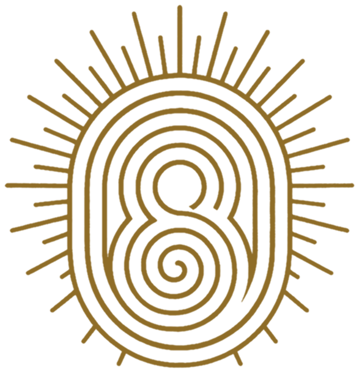

TIERRA SAGRADA
CERCA DE CARTAGENA
KOWI SEI reúne arquitectura de élite, bungalows y residencias frente al Caribe colombiano. Playa virgen, vegetación tropical, naturaleza, hospitalidad, gastronomía, bienestar, deporte y experiencias forman parte de una propuesta diseñada para vivir, regresar, rentar y construir legado familiar.
La tierra se limpia, se recupera y se reforesta. La arquitectura convive con el paisaje y KOWI propone una nueva forma de desarrollar la costa colombiana desde sus propias raíces.
KM 35 · VÍA AL MAR
Playa Virgen frente al Caribe
